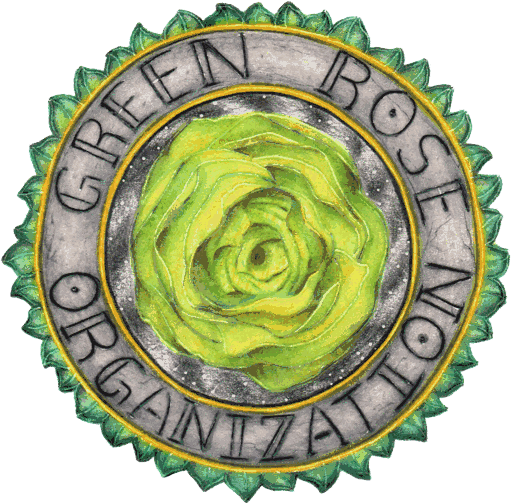

Anton’s donation jar
Help keep Anton’s adventures running.
- Press and hold the address above, choose Select all if needed, then Copy. On a computer, select the address and copy it.
- Open Chrome, Safari, or another browser separately.
- Paste the address into the browser’s address bar and press Go or Enter to open PayPal.
← Return to Anton